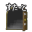

非公式！脱法！チート！勇者ヤマダくん経路探索ツール
DandyDungeonRouteSearch
(最初の読み込みにしばらく時間がかかります。読み込まれない場合はリロードしてみてください。)
- あくまで非公式です。公式の「勇者ヤマダくん」とは関係ありません。
- Unity5のWebGLで出力しています。ブラウザや環境によってはうまく動作しないことがあります。
- スマホも機種によっては一応動きます。ただ、若干挙動があやしい部分があります。
使い方は？
右側のアイコンを好きなマスにひっぱってくると、マスの状態が変わります。
マスの境目を押すと壁が出たり消えたりします。
 ゆか … 普通のゆか。残してはいけない。
ゆか … 普通のゆか。残してはいけない。 とおれない … どうやっても通れない。
とおれない … どうやっても通れない。 みず … 敵や障害物、お宝などは配置可能。アイテムで無効化しないと通れない。
みず … 敵や障害物、お宝などは配置可能。アイテムで無効化しないと通れない。おたから … コインや宝箱。スルーしてもパーフェクト可能。
いりぐち … ここからはじまる。
 でぐち … ここでおわる。
でぐち … ここでおわる。 てき … 一匹でも残っているとパーフェクトにならない。
てき … 一匹でも残っているとパーフェクトにならない。 しょうがいぶつ … 上に同じ。
しょうがいぶつ … 上に同じ。 わな … たまに敵に踏まれて消えるのがかわいい。避けてもパーフェクト可能(たぶん)。
わな … たまに敵に踏まれて消えるのがかわいい。避けてもパーフェクト可能(たぶん)。 イベント … 上にのったタイミングで回復したりワープしたりするマス。スルー可能(たぶん)。
イベント … 上にのったタイミングで回復したりワープしたりするマス。スルー可能(たぶん)。 おたからのこし … コインや宝箱を残すルートも表示する。完璧主義者や吝嗇家は×にする。
おたからのこし … コインや宝箱を残すルートも表示する。完璧主義者や吝嗇家は×にする。カベクズシ … 壁をすべて取り払った場合のルートも表示する。
 モモアイス … 入口でミナアイスとモモーゼを使用した場合のルートも表示する。
モモアイス … 入口でミナアイスとモモーゼを使用した場合のルートも表示する。 ばくだん … なにもかも嫌になったときに連打する。
ばくだん … なにもかも嫌になったときに連打する。
「おたからのこし」を○にした状態でお宝を山ほど配置すると、場合によっては道順の組み合わせが数千パターンになってしまい、「しらべる」を押したときに処理が若干長くなってしまう可能性があります。
注意点は？
入口から出口に移動する道中で起こる変化には全く対応していません。例えば珍豚やUFO、ドラキュラのように突然出現したり移動したりする敵は想定していません。さらに敵に対する遠距離攻撃も一切考慮に入れていないため、敵を水の中に配置した場合はミナアイス・モモーゼを使って実際にそのマスを通過するしかパーフェクトにする方法がありません。さらにさらに敵メイジが使うミナアイスもないことにしています。出口の巻物は知らん！ピラミッドの罠とかも知らん！
その他もろもろ、パーフェクト判定の仕様などでも勘違いがあるかもしれません。あんまり信じないでネ。
更新履歴
- Feb 11, 2017: 水の中に障害物を残した状態ではパーフェクトをとれない仕様に変更
- Jan 18, 2017: 探索処理にかかる時間を短縮
- Dec 23, 2016: 探索処理が長時間になる場合は進捗を表示し途中でキャンセルができるように変更
- Dec 22, 2016: タッチスクリーンでの操作がおかしくなるのを一応対策, 道順の描画速度がフレームレートの影響をうけないよう修正
- Sep 25, 2016: 一部の壁のフラグ設定がおかしくなっていたのを修正
- Sep 23, 2016: リセットしやすいよう爆発までの回数を変更
- Sep 20, 2016: 公開